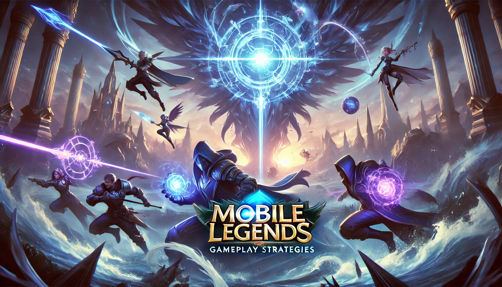
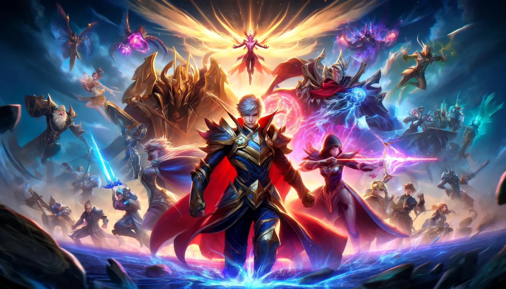
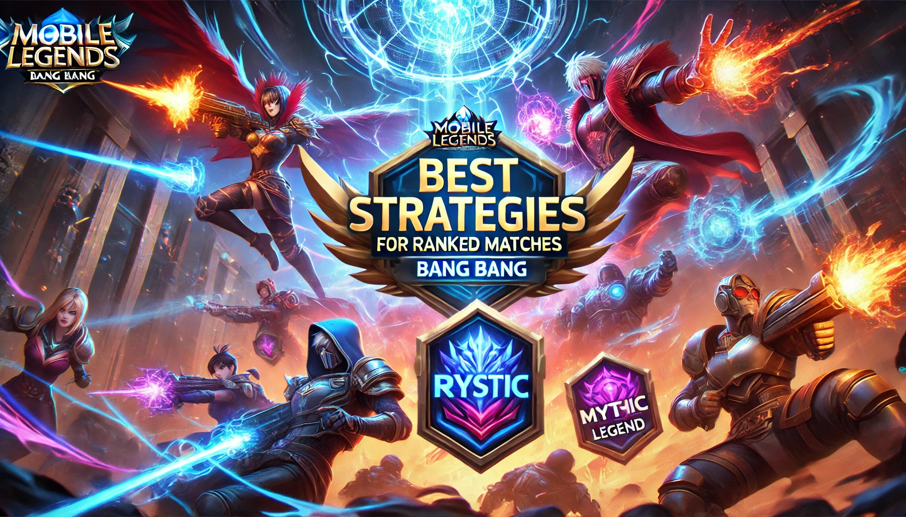

Map Awareness, Rotations, and Team Coordination
By Kenjie
•
March 15, 2025

Mobile Legends: Bang Bang is not just about individual skill; it's a team-based game that requires strategic thinking, map awareness, and excellent coordination. In this blog post, we'll dive into three critical aspects of gameplay: Map Awareness, Rotations, and Team Coordination. Mastering these strategies will help you climb the ranks and dominate the battlefield.
1. Map Awareness
Map awareness is the foundation of good gameplay. It involves keeping an eye on the mini-map to track enemy movements, predict ganks, and make informed decisions. Here are some tips to improve your map awareness:
- Check the Mini-Map Frequently: Make it a habit to glance at the mini-map every few seconds.
- Ward Key Areas: Place wards in strategic locations, such as river bushes and jungle entrances.
- Communicate with Your Team: Use quick chat or voice communication to alert your team about enemy movements.
2. Rotations
Rotations refer to moving between lanes to support teammates, secure objectives, or apply pressure. Proper rotations can turn the tide of a game. Here's how to rotate effectively:
- Prioritize Objectives: Always rotate to secure key objectives like Turtle, Lord, or enemy towers.
- Timing is Key: Rotate when your lane is pushed or when you see an opportunity to gank an overextended enemy.
- Don't Overcommit: Avoid rotating too far from your lane, as it can leave your tower vulnerable.
3. Team Coordination
Team coordination is essential for winning team fights and securing victories. Here are some tips to improve teamwork:
- Phoveus: A versatile fighter with high sustain damage.
- Beatrix: A marksman with multiple weapon modes for different situations.
- Yve: A mage with incredible zoning and crowd control abilities.
- Mathilda: A suport with excellent initiation and crowd control.
- Fanny: An assassin with unmatched mobility and burst damage.
Top 5 Mobile Legends Heroes in 2024
By Kenjie | March 15, 2025

The meta in Mobile Legends is constantly evolving, and 2025 is no exception. Here are the top 5 heroes dominating the battlefield this season:
- Paquito: A versatile fighter with high burst damage and mobility.
- Beatrix: A marksman with multiple weapon modes for different situations.
- Yve: A mage with incredible zoning and crowd control abilities.
- Khufra: A tank with excellent initiation and crowd control.
- Ling: An assassin with unmatched mobility and burst damage.
Best Strategies for Ranked Matches
By Monde Team | March 12, 2025

Climbing the ranks in Mobile Legends requires more than just skill. Here are some strategies to help you dominate ranked matches:
- Master a Few Heroes: Focus on mastering 2-3 heroes in different roles.
- Adapt to the Meta: Stay updated on the current meta and adjust your hero picks accordingly.
- Play with a Team: Queue with friends or teammates to improve coordination and communication.